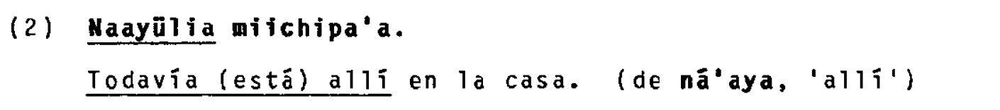
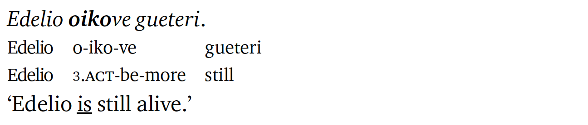
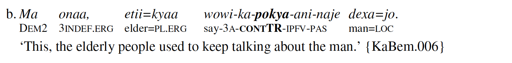
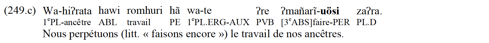
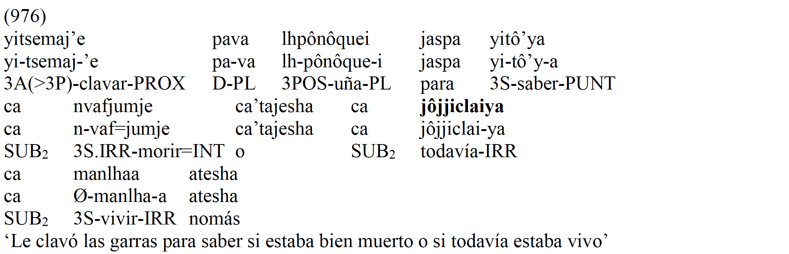
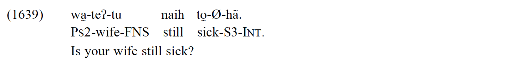
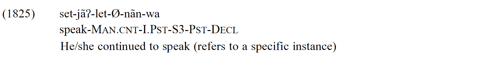
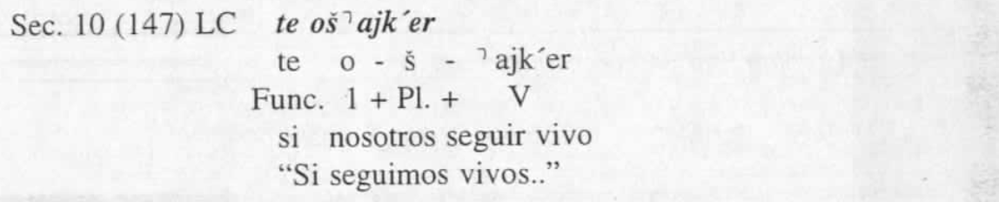

Continutives in South America
1. Languages
All South American languages included in the sample.
1.1. List
1.2. Map
2. Examples

Arawakan (> Caribbean Arawakan)
Wayuu (Mansen and Mansen 1984:535)

The continuative marker: -yülia.
Tupian
Paraguayan Guaraní (Gerasimov 2020:2)

The continuative marker: -ve.
Paraguayan Guaraní (Estigarribia 2020:234)

The continuative marker: gueteri.
Pano-Tacanan
Ese Ejja (Vuillermet 2012:478)

The continuative marker: -poki/ -pokya.
Ese Ejja (Vuillermet 2012:543)

The continuative marker: -so’o.

Nuclear-Macro-Je
Xavánte (Machado Estevam 2011:291)

The continuative marker: -uösi.
Xavánte (Machado Estevam 2011:107)

The continuative marker: hadu ~ zahadu.

Matacoan
Nivaclé (Fabre 2016:365)

The continuative marker: jôjje-clai.
Nivaclé (Fabre 2016:360)

The continuative marker: manlhe-e-sh.


Nambiquaran
Mamaindé (Eberhard 2009:359)

The continuative marker: naih.
Mamaindé (Eberhard 2009:407)

The continuative marker: -jãʔ (-ja, -ʔai, -jaʔna).
Chonan
Tehuelche (Fernández Garay 1998:143)

The continuative marker: -r.
Tehuelche (Fernández Garay 1998:295)

The continuative marker: keTš ~ keTx.


3. Parameters
3.1. Morposyntactic status
3.2. Meaning in combination with negation
3.3. TAM restrictions
3.4. Adjacent meanings
3.5. Diachronic sources
References
Courtz, H. 2008. A Carib Grammar and Dictionary. Toronto: Magoria Books.
Crowell, T. H. 1979. A grammar of bororo.
Dienst, S. 2014. A Grammar of Kulina. Berlin: De Gruyter Mouton.
Eberhard, D. M. 2009. Mamaindê grammar: A northern nambikwara language and its cultural context.
Epps, P. 2008. A Grammar of Hup. Berlin: Mouton de Gruyter.
Eraso, N. 2015. Gramática tanimuka, una lengua de la amazonía colombiana.
Estigarribia, B. 2020. A Grammar of Paraguayan Guarani. London: UCL Press.
Fabre, A. 2016. Gramática de La Lengua Nivacle (Familia Mataguayo, Chaco Paraguayo). Kangasala.
Fernández Garay, A. 1998. El Tehuelche: Una Lengua En Vías de Extinción. Valdivia: Facultad de Filosofía y Humanidades, Universidad Austral de Chile.
Gerasimov, D. 2020. Mini-course on paraguayan guarani at hse.
Gonzales Castaño, G. 2019. Una gramática de la lengua namtrik de totoró: Lengua barbacoa hablada en los andes colombianos.
Grinevald, C. G. 1990. A grammar of rama.
Hanson, R. 2010. A grammar of yine (piro).
Higuita, J. M. G. 2008. Una Gramatica Del Wansöjöt (Puinave). Utrecht: LOT.
Machado Estevam, A. 2011. Morphosyntaxe du xavante, langue jê du mato grosso (brésil).
Mansen, K. and R. A. Mansen. 1984. Aprendamos Guajiro: Gramática Pedagógica de Guajiro. Lomalinda: Editorial Townsend.
Payne, D. L. 1985. Aspects of the grammar of yagua: A typological perspective (peru).
Shimelman, A. 2017. A Grammar of Yauyos Quechua. Berlin: Language Science Press.
Smeets, I. 2008. A Grammar of Mapuche. Berlin: Mouton de Gruyter.
Vuillermet, M. 2012. A grammar of ese ejja, a takanan language of the bolivian amazon.
Wojtylak, K. I. 2017. A grammar of murui (bue): A witotoan language of northwest amazonia.